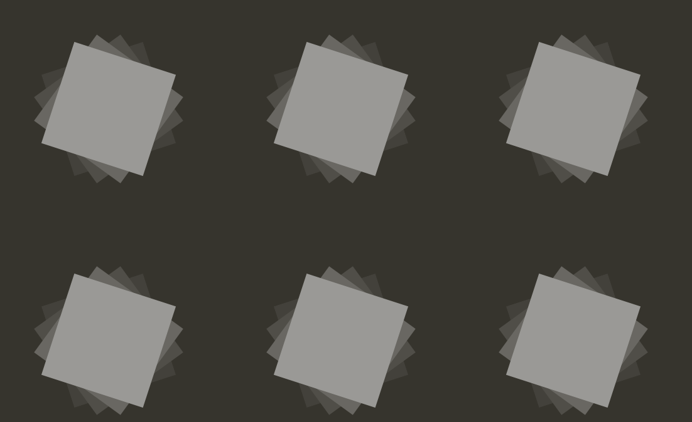

---
layout: page
title: Kinetic Patterns
author: Lukas WinklerPrins
description: I found that almost all of my work is guided by the question “what is a piece of browser-native media?” This started with kinetic patterns, taking advantage of the infinitely long, interactive canvas of the browser window. The pages explore user-animated and curated form generation through the intuitive gesture of scrolling in a web browser.
category: project
printready: true
---
Inspired by Maharam Digital Projects.